Hercse / 2023, Mer 25.
刻劃啟蒙的輪廓──黃土水與《甘露水》，百年尺度的遺產與見證
1921年10月，台灣的文化界有兩起大事件：台灣文化協會成立，雕塑家黃土水的大理石雕塑《甘露水》入選日本帝國美術展覽會。誕生百年後，塵封已久的《甘露水》經整理修復，2021年12月18日即將在北師美術館重新面世。
那時27歲的黃土水，揣想人間不過五十載，自己已耗去大半，勢必得更加用力創作，他寫道：「殘餘的生命中究竟會完成什麼樣的作品呢？雕刻家的重要使命在於創造出優良的作品，使目前人類的生活更加美化。」把生命奉獻給藝術的黃土水，35歲便步下人生舞台，但他的作品跨越有限的時間及肉身，成為回望台灣美術史的重要里程碑。
在台中霧峰一間工廠的角落，塵封的記憶即將重見天日。
日籍修復師森純一用鐵鍬挑出鏽蝕的釘子，掀開一片片腐朽木板，再小心剝除層層麻布和塑膠布。親自去接收這件國寶級作品的，還有國家文化藝術基金會董事長林曼麗，回想那天，她說：「我一輩子也不會忘記開箱看到《甘露水》的那一剎那，被封存在那個木箱裡面50年，我相信不只是我，所有的人都緊張到不行，因為沒有人知道她的狀況是怎樣。」
2021年5月6日，《甘露水》迎來半世紀後的重生。
生如人、美如神，《甘露水》蘊含黃土水惦念的台灣之美
1921年，《甘露水》入選日本第三回帝國美術展覽會（簡稱帝展）。帝展是日本最重要的官方展覽會，由日本國內權威學者、批評家和藝術家擔任審查委員，可謂藝術最高殿堂。不過，這是「日本人」的主舞台，在殖民地台灣的藝術家難入其門。正因難度甚高，若能入選便會被大肆報導，成為藝壇明星。《甘露水》誕生距今正好百年，這是台灣第一座女性裸體雕像，也是黃土水繼《蕃童》後第二度入選帝展。